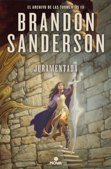
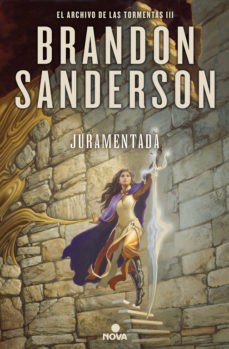

El archivo de las tormentas
En Roshar, un mundo de piedra y tormentas, extrañas tempestades de increíble potencia barren el rocoso territorio de tal manera que han dado forma a una nueva civilización escondida. Han pasado siglos desde la caída de las diez órdenes consagradas conocidas como los Caballeros Radiantes, pero sus espadas y armaduras aún permanecen.

 

Esta es llamada por su Autor Brandon Sarnderson su obra magna, Es una decalogia de la cual actualmente solo estan escritos 3 de los 10 libros
-El camino de los reyes
-Palabras radiantes
-juramentada